Components
Components
Live React components built from the Pulse Figma component sets. Every example below is running code, so switch the theme at the top to see each one in Core UI and PLI, light and dark.
Button
Buttons start actions, in three levels of emphasis: primary, secondary and tertiary, each with a destructive version.
Guidelines and props
Buttons start actions, in three levels of emphasis: primary, secondary and tertiary, each with a destructive version.
Choosing a variant
- Primary marks the most important action on a page. Use one per view where you can.
- Secondary is for important actions that sit alongside a primary one, like "Continue" and "Cancel" in a confirmation modal. Also use it when many actions on a screen have the same priority.
- Tertiary looks like a text link but is a standalone action, not a link inside a block of copy. Use it for lower-priority actions. It's the only variant with a small size.
- Destructive (
destructive) is for actions that delete data or can't be undone. Pair a destructive primary button with a plain secondary "Cancel".
States
| State | What changes |
|---|---|
| Hover | Primary turns to a light tint (button-primary-background-hover) with dark text. Secondary fills with the tint and darkens its outline. Tertiary underlines. |
| Focus | Same as hover, plus the focus-ring shadow: a 2px white gap and a 4px purple halo. Tertiary gets a white background and the wider focus-ring-tertiary. Shown only for keyboard focus (:focus-visible). |
| Pressed | Primary fills with button-primary-background-pressed. Secondary and tertiary darken their text and outline. |
| Disabled | Every variant goes to background-disabled with text-body-disabled text. Tertiary keeps a transparent background. |
| Loading | Looks disabled, adds a spinner and sets aria-busy. The spinner replaces the icon, or sits on the right when there's no icon. |
Layout
- Shape: primary and secondary are pills (
radius-200). - Size:
button-min-height44px, withbutton-vertical-padding12px, on desktop and mobile. - Side padding:
button-horizontal-padding32px on desktop and 24px on mobile (under 600px). - Icons: 16px (
height-icon-200), withspace-100(8px) between icon and label. - Labels: Lexend Deca Medium, 16/20. Small tertiary buttons use 14/20.
- Tertiary has no padding or minimum height. Give it room in the layout so the tap area reaches 44px on touch screens.
What you provide
- A short verb-phrase label, such as "Book a visit" or "Save changes".
- Optionally, an icon:
iconNametakes any Pulse icon name (see the Icons assets), and the default isplus. For custom art, pass a 16px SVG drawn withcurrentColorasiconNode. hrefwhen the button navigates, so it renders as a link.
Accessibility
- Labels must make sense on their own. Avoid "Click here".
- A loading button is disabled, so it can't be submitted twice.
- Disabled buttons can't be focused. If people need to know why an action is unavailable, say so in nearby text.
- Disabled text (
#716775on#ececee) has 4.5:1 contrast. - The primary hover and focus state (
#542f9bon#ededff) has 8:1 contrast.
Differences from Figma
- Spinner: Figma's loading spinner uses the Teladoc Health connector mark. Here it's a plain ring until that artwork is added.
- Platform: iOS uses a native spinner in Figma (the Platform collection). This web version always uses the ring.
- Themes: button colors switch with all four themes (Core UI Light and Dark, PLI Light and Dark).
Checkbox input
Checkbox lets people pick any number of options from a short list, or confirm agreement.
Guidelines and props
Checkbox lets people pick any number of options from a short list, or confirm agreement.
Usage
- Use
Checkboxfor one option andCheckboxGroupto give a set of options a label, helper and message. CheckboxGrouprenders a<fieldset>with the label as its<legend>.- For one answer from a list, use radio buttons or SelectionCard (radio).
- Labels can include links (pass children). Links use
text-body-link.
Anatomy
- Box: 24px (
form-input-control-selection-height) withradius-050corners (4px; 1px in PLI). - Row padding: 8px vertical, 4px horizontal, with 12px between the box and the label (
form-input-control-selection-gap). - Label: 16/20 regular.
- Selected: fills with
form-input-control-checkbox-background-selected, with a white check.
States
| State | What changes |
|---|---|
| Hover | Box outline becomes 2px form-input-control-stroke-hover; label turns form-input-control-text-hover. |
| Focus | Hover styles plus a white row background and the focus-ring around the whole row. |
| Error | Red outline; a selected box fills with background-status-critical-base. The group label turns red and the message appears below. |
| Disabled | form-input-control-background-disabled box, grey check, disabled label. |
View only (readOnly) |
Selected boxes fill with form-input-control-checkbox-background-view-only-selected. Clicks are ignored and the box has aria-readonly. |
Accessibility
- The native checkbox stays in the page, visually hidden, so keyboard and screen readers work as normal.
- The whole row is the click target, so it's at least 40px tall.
Password input
Password input is for entering or creating a password, with a Show/Hide toggle and, when creating, live strength and requirement feedback.
Guidelines and props
Password input is for entering or creating a password, with a Show/Hide toggle and, when creating, live strength and requirement feedback.
Modes
- Sign in (default): the field and the Show/Hide button.
autocompleteiscurrent-password. - Create (
mode="create"): adds a three-part strength bar and a requirements list that update as people type.autocompleteisnew-password.
Strength
- Very weak: one of three segments, in
background-status-critical-base. Shown when fewer than half the requirements are met. - Average: two of three segments, in
background-status-success-base. Shown when at least half are met. - Strong: the full bar is green, when every requirement is met.
Requirements
- The default list matches Figma: at least 10 characters, upper and lower case, a number and a symbol, and no name or email.
- Pass
excludeWords(the person's name, email and so on) to check the last rule. - Pass
requirementsas[{ label, test(value) }]to change the list, or[{ label, met }]to control it yourself. - Met items show a filled
check-circleinicon-status-success. Unmet items show the outline icon inicon-disabled.
States
- Input and toggle: they have separate hover and focus states (
state="hover-input","focus-input","hover-button","focus-button"force them for docs). The toggle text turnsform-input-control-text-hoveron hover. - Error: both parts get the error outline.
- Disabled: both parts grey out.
- View only: shows the obscured value with a lock icon and no toggle.
Accessibility
- The toggle is a button with
aria-pressedandaria-controls, labelled "Show password" or "Hide password". - Strength changes are announced politely (
aria-live). - Each requirement includes hidden "met" or "not met" text, so it isn't conveyed by the icon alone.
Select input
Select input lets people pick one answer from a list of set options. The list opens in a dropdown menu under the control.
Guidelines and props
Select input lets people pick one answer from a list of set options. The list opens in a dropdown menu under the control.
When to use
- There's a reasonable number of options, and people don't need to search or filter them.
- Only one option can be chosen.
- There isn't room to show every option on the page.
Don't use it when:
- There are many options, or searching would help. Use an advanced select.
- People can pick more than one. Use checkbox inputs or checkbox selection cards.
- Each option needs more than a short description. Use selection cards.
Common uses at Teladoc Health include choosing your location when requesting a visit, describing conditions in a medical history, and picking a time frame for health data, such as the past 14 days or 3 months.
Anatomy
- Label (
label): 16/20 semibold. It turns red (form-input-label-text-label-error) in the error state. - Helper (
helper): 14/20 inform-input-label-text-helper. - Control: the same as text input. 44px tall, 12px padding,
form-input-control-radiuscorners, 1pxform-input-control-stroke-defaultoutline. - Placeholder (
placeholder): "Select" by default, inform-input-control-text-placeholder. Once something is chosen, the answer shows inform-input-control-text-filled. - Dropdown indicator: the
arrow-downicon inform-input-control-icon-default. It flips while the menu is open. - Inline message (
message): appears under the control with a status icon. - Dropdown menu (Form-dropdown): floats
space-100below the control, over the content below it.navigation-background-surfacefill,radius-150corners,elevationshadow, scrolls after about 9 options. - Option: 16/20 label with 12px padding and a
stroke-basedivider. An optional 14/20 description (description) sits under the label. - Selected option:
navigation-text-selectedlabel and acheckicon on the right.
Options
options takes strings, or objects with value, label and an optional description. Options with and without descriptions can be mixed in one menu.
<SelectInput
label="Time frame"
options={[
{ value: "14d", label: "Past 14 days" },
{ value: "3m", label: "Past 3 months", description: "Weekly averages" }
]}
defaultValue="14d"
/>States
| State | What changes |
|---|---|
| Hover | Outline becomes 2px form-input-control-stroke-hover. |
| Focus | 2px hover outline plus the focus-ring halo. |
| Warning | form-input-control-stroke-warning outline and a warning message. |
| Error | form-input-control-stroke-error outline, red label, error message. The control gets aria-invalid. |
| Disabled | form-input-control-background-disabled fill, disabled text and icon. |
View only (readOnly) | form-input-control-background-view-only fill and a lock icon in place of the arrow. |
Menu options have default, hover (navigation-background-hover), pressed (navigation-form-list-item-background-pressed) and selected states.
Interaction
- Click or tap the control to open the menu. Choosing an option updates the control and closes the menu.
- Clicking outside the menu closes it without changing the answer.
- The menu sits over other content. It never pushes the page down.
- Optional fields need a way to clear the answer. Set
optionalto add a "Select" item at the top of the menu that returns the control to its placeholder.
Accessibility
- The control is a
comboboxbutton that opens alistbox. Screen readers announce the label, the current answer and whether the menu is open. - Keyboard: Down, Up, Enter or Space opens the menu. Home and End open it on the first or last option. Up and Down move through options, Enter or Space chooses one, and Escape closes the menu. Typing a letter jumps to the next option that starts with it.
- A view-only select stays in the tab order. A disabled select is skipped.
- The helper and message are linked with
aria-describedby. The status icon in the message is decorative.
Selection card
Selection card is a radio or checkbox option that needs more than a one-line label, such as a visit type with a short description.
Guidelines and props
Selection card is a radio or checkbox option that needs more than a one-line label, such as a visit type with a short description.
Usage
type="radio"(default) is for picking one. Give the cards in a set the samename, and wrap them in an element withrole="radiogroup"and a label.type="checkbox"is for picking any.titleis 16/20 semibold.description(or children) is 14/20 and can hold a custom body.- Stack cards with
space-150(12px) between them.
Anatomy
- Padding: 24px (
padding-300) with 16px between content and control. - Shape:
radius-150corners and a 1pxform-input-control-stroke-defaultoutline. The checkbox control inside hasradius-050corners (4px; 1px in PLI). - Control: 24px, on the right.
States
| State | What changes |
|---|---|
| Hover | Fill form-input-control-chip-background-hover, title form-input-control-chip-text-hover, control outline 2px. |
| Focus | Hover styles plus focus-ring. |
| Selected | Fill form-input-control-chip-background-selected and a 2px form-input-control-chip-stroke-default-selected outline. Radio shows a 16px dot; checkbox fills. |
| Error | White fill, red outline and control, and an inline message under the card (message). |
| Disabled | Grey fill and text. A selected card keeps a 2px grey outline. |
View only (readOnly) |
View-only fill, and a lock replaces the control. |
Accessibility
- Each card is a
<label>wrapping a visually hidden native input, so arrow keys move between radio cards. - The error message is linked with
aria-describedby.
Slider input
Slider lets people pick a value, or a range of values, by dragging along a track.
Guidelines and props
Slider lets people pick a value, or a range of values, by dragging along a track.
Types
- Left to right (default): fills from the minimum up to the handle.
- Right to left (
direction="rtl"): fills from the handle to the maximum. Use it when lower is the goal. - Range (
range, value[low, high]): two handles with the fill between them. Clicking the track moves the nearest handle.
Anatomy
- Value above the handle: 16/20 semibold, formatted with
formatValue, such asv => v + " lbs". - Track: 8px tall,
form-input-control-background-disabledwith a 1pxform-input-control-stroke-defaultoutline. - Fill:
form-input-control-background-default-interactive. - Handle: 24px, with a 2px white border and a 44px tap target.
- Min and max: shown under the track in helper color. Turn them off with
showRange={false}. - Gap: 24px between the labels and the slider (
form-input-slider-gap).
States
| State | What changes |
|---|---|
| Hover | Handle turns form-input-control-background-hover-interactive. |
| Focus | Hover color plus focus-ring on the handle (keyboard only). |
| Pressed | Handle grows to 32px (form-input-slider-handle-height-pressed) while dragging. |
| Disabled | Fill and handle turn form-input-control-slider-background-active-disabled. |
Accessibility
- Each handle is a native range input, so arrow keys, Page Up/Down and Home/End work.
- Screen readers hear the formatted value (
aria-valuetext). Range handles are named "Minimum" and "Maximum". - Always pair a slider with a label. When the exact value matters, offer a text input as well.
Text input
Text input lets people write or edit a single line of text, with an optional unit, icon and status message.
Guidelines and props
Text input lets people write or edit a single line of text, with an optional unit, icon and status message.
When to use
- Short free text: names, emails, numbers with a unit such as weight in lbs.
- Use a select or radio group when the answer comes from a fixed list.
Anatomy
- Label (
label): 16/20 semibold. It turns red (form-input-label-text-label-error) in the error state. - Helper (
helper): 14/20 inform-input-label-text-helper. Use it for format hints, not instructions that must be read. - Control: 44px tall (
form-input-control-height), 12px padding,form-input-control-radiuscorners, 1pxform-input-control-stroke-defaultoutline. - Unit (
unit,unitPosition): placeholder-colored text before or after the value, such as$orlbs. - Icon (
icon): any Pulse icon name, shown before the text, such assearch. - Inline message (
message): appears under the control with a status icon.
States
| State | What changes |
|---|---|
| Hover | Outline becomes 2px form-input-control-stroke-hover. |
| Focus | 2px hover outline plus the focus-ring halo. |
| Warning | form-input-control-stroke-warning outline and a warning message. Use it for unusual but allowed values. |
| Error | form-input-control-stroke-error outline, red label, error message. The input gets aria-invalid. |
| Disabled | form-input-control-background-disabled fill, disabled text. |
View only (readOnly) |
form-input-control-background-view-only fill and a lock icon. The value can be read and copied but not changed. |
Writing messages
- Error: say what's needed, such as "Email is required" or "Enter a date like 04/12/1986".
- Warning: say what looks off and what to check.
Accessibility
- The label is a real
<label>. The helper and message are linked witharia-describedby. - The placeholder is never a substitute for the label.
Card
Cards group related content, such as text, media and actions, into one container.
Guidelines and props
Cards group related content, such as text, media and actions, into one container. They can be arranged in stacks, columns or grids.
Anatomy
- Container:
background-surface, a 1pxstroke-baseborder andradius-150corners. - Image (
image): optional, one of three types. hero: a full-width 2:1 image on top.spotoravatar: a circle that bleeds off the top-right corner.- Pass
{ type, src, alt }for a photo, or{ type, node }for an illustration. - Header: optional
eyebrow(12/20) andheader(20/26 semibold on desktop, 18/24 on mobile).headerActionputs a control, such as an icon button, on the right. - Main content (children): body text at 16/26, with 12px (
space-150) between blocks. - Footer (
footer): buttons. - Default: buttons sit in a row.
footerStyle="filled": stacks them on abackground-subduedband.- Spacing: 24px (
padding-300) on every side.
Responsive
The card reacts to its own width, not the window's. Under 480px:
- Footer buttons stack and fill the width.
- The header drops to 18/24.
- Spot and avatar circles shrink.
Usage
- Use no more than one primary button per card.
- Keep the header short. The body can wrap.
- Spot and avatar images need room: the header and first body block get extra right padding automatically.
Accessibility
- Cards render as
<section>. SetheaderAsto keep the heading levels in order on the page (the default ish3). - Images need
alttext unless they're decorative.
Markdown text
Markdown text renders dynamic content, such as text from a content system, with Pulse type styles.
Guidelines and props
Markdown text renders dynamic content, such as text from a content system or an API, with Pulse type styles. The same Markdown can be shown on web, iOS and Android.
When to use
- The text comes from somewhere else and can change, such as care plan steps or help articles.
- The content mixes headings, paragraphs, lists and links.
For text you write into a screen, use the Pulse type styles directly.
Markdown and type styles
| Property | Markdown | Pulse type style |
|---|---|---|
| H1 | # Heading | heading-heading-1 |
| H2 | ## Heading | heading-heading-2 |
| H3 | ### Heading | heading-heading-3 |
| H4 | #### Heading | heading-heading-4 |
| Body text (default) | Plain text | body-default |
| Bold | bold text | body-strong |
| Italics | *italics text* | body-italics |
| Ordered list | 1. First item | body-default |
| Unordered list | - First item | body-default |
| Link | [title](https://www.example.com) | body-text-link |
Bare links such as https://www.example.com also become links.
Spacing
- Headings use the matching
space-between-heading-N-bodytoken before the text under them. - Paragraphs and lists use
space-between-body. - Padding around the content is up to the team using it.
Safety
- The component builds React elements and never inserts HTML, so HTML in the Markdown shows as plain text.
- Only
https:,http:,mailto:,tel:and relative links become links. Anything else shows as plain text.
Accessibility
- Headings are real
h1toh4elements, so they show up in the page outline. UseheadingOffsetto move them down a level (1 makes#anh2) when the page already has anh1. They keep their look. - Annotate Markdown text like any other text. The headings and body in one block are one component.
- Write link text that makes sense out of context.
Visit card
Visit card shows one scheduled visit: the date and time, the provider and the care type, with up to three actions.
Guidelines and props
Visit card shows one scheduled visit: the date and time, the provider and the care type, with up to three actions. It's built from the Figma "Visit-card-v2" set, which is marked as under development for Pulse 5.7.
Types
type |
Use it for | Looks like |
|---|---|---|
upcoming (default) |
A visit later than today. | Date block in brand-human-care-background-subdued, time in the eyebrow. |
today |
A visit happening today. | Same as upcoming, or the prominent style below. |
past |
A visit that already happened. | Date block in visit-card-background-disabled with the year, and a gray eyebrow. |
custom |
Any other status, such as Requested. | No date block. The eyebrow shows label. Up to three actions. |
Prominent
prominent highlights the next visit for Upcoming and Today. It drops the date block, adds a 6px brand-human-care-stroke bar on the left, and moves the time into a pill on the right. The eyebrow reads "Today" or "Tomorrow" by default; change it with label, such as "Thursday".
footerStyle="prominent"turns the first action into a full-width primary button, for when joining is the main task. The second action stays tertiary underneath.- Show only one prominent card per screen.
Content
header: the provider, such as "Dr. Ana Rivera, MD".description: the care type.month,day,year(year shows on past visits),time.icon: the visit type, such asvideo(default) orphone. PassiconLabel("Video visit") so screen readers hear it.icon={null}hides it.canceled: adds "Canceled" intext-status-criticalunder the care type.actions:[{ label, href?, onClick? }]as small tertiary buttons. Two at most, or three for custom.
Linking
Pass href to make the whole card a link to the visit details. An arrow appears on the right, the hit area covers the card, and the actions stay separately clickable above it. arrow shows the arrow without a link. Custom cards can take href too, but never show the arrow. Prominent cards have no main action.
Accessibility
- It renders as
<article>with the provider as an<h3>. Change the level withheadingAs. - Don't rely on the left bar or date color alone: the eyebrow text says Today, Tomorrow or the status.
Differences from Figma
- The Figma "Tomorrow" eyebrow is fixed text; here it's the default for a prominent upcoming card and can be changed.
- The card stretches to its container; Figma shows it at 358px.
Global header
Global header is the top bar of every screen: main navigation in the app, a focused header for single tasks, and a progress tracker for multi-step flows.
Guidelines and props
Global header is the top bar of every screen: main navigation in the app, a focused header for single tasks, and a progress tracker for multi-step flows.
Types
- Default (
type="default"): logo, mainnav,utilities(icon + label, with optionalbadge),language, and a primarycta. - Desktop: 76px tall, content up to 1280px wide.
- Mobile: icon buttons and the CTA.
- Focused task (
type="focused"): Back, the logo (or the pagetitleon mobile) and Close. Use it when people should finish one task without wandering off. - Progress tracker (
type="progress"): Back, thestepswith thecurrentStepin bold, a 4px progress bar inprogress-tracker-active, and Exit. - On mobile: the current step label and "Step N of N".
- Pass
progress(0 to 1) to set the fill yourself.
Signed in or out, web or native
The Figma component has three properties besides type: Platform (Native, Web mobile, Web desktop), Logged in (Yes, No) and Scrolled (mobile only).
| Default | Focused task | Progress tracker | |
|---|---|---|---|
| Signed in, web | Desktop: logo, nav, utilities, language, CTA. Mobile: utility icons, language, CTA, no logo | Back, logo (mobile: page title), Close | Back, steps, Exit |
| Signed out, web | Logo, country, language (mobile too: this is the only mobile header with the logo) | Back, logo (mobile: page title), language | Back, steps (no Exit) |
| Signed in, native | Utility icons, CTA (no language) | Back, page title, Close | Back, step label, Close |
| Signed out, native | none | Back, page title | Back, step label |
- Set
loggedIn={false}for signed-out pages. Nav, utilities and the CTA are hidden,countryshows, and Close/Exit are removed. - Set
platform="native"for the iOS and Android apps. The language menu is removed. - The logo appears on mobile only in the signed-out default header. Signed-in mobile headers use the space for utilities and the CTA.
Scrolled
On mobile, pass scrolled once the page scrolls (for example, after 8px). The header gets shorter, icons and the CTA get smaller, count badges turn into dots, and the progress tracker keeps only "Step N of N". Desktop has no scrolled version.
Progress value
valueType="percentage" swaps the step text for "NN% completed": on desktop the current step label sits on the left and the percentage on the right, and on mobile the percentage replaces "Step N of N".
Responsive
The header reacts to its own width. Under 768px it switches to the mobile layout. layout="desktop" or "mobile" forces one.
Nav items
| State | Look |
|---|---|
| Default | navigation-text-default, transparent. |
| Hover | navigation-background-hover fill, navigation-text-hover. |
| Focus | Hover plus focus-ring. |
| Current | navigation-background-hover fill, navigation-text-current semibold, filled icon, aria-current="page". |
Badges
badge: 2shows a count inbackground-status-critical-base.badge: trueshows an 8px dot.- Screen readers hear the count as part of the label, such as "Messages, 2 new".
Logo
- By default the header shows the Teladoc Health logo (
Pulse.Logo) at 40px tall, linking tohrefwith the accessible name "Teladoc Health home". Change the name withlabel. - To use a different logo, pass it as
logo(an<img>, an SVG or another component).
Accessibility
- It renders as
<header>, and the main links are in a<nav>labelled "Main". - Mobile icon buttons are 44px with labels.
- Hide Back or Close by passing
onBack={null}oronClose={null}. - Not part of this component: the tab bar at the bottom of the app is Global footer.
Connector
The Connector is a key Teladoc Health brand element, from the Figma "Teladoc-Health-connector" on the Logos and marks page.
Guidelines and props
The Connector is a key Teladoc Health brand element, from the Figma "Teladoc-Health-connector" on the Logos and marks page. It can pair with the paver system, but use it purposefully.
When to use it
- To direct attention: a subtle element that leads the eye to a message.
- As a watermark: a quiet brand reinforcement repeated across a multi-slide social post or a video.
- To introduce app elements, such as the icon on a push notification.
Don't use it as a logo replacement, a bullet, or decoration on every screen.
Usage
<Connector /> // 64px, decorative
<Connector size={32} />
<Connector title="Teladoc Health" /> // when it stands alone and carries meaning
- Size:
sizesets the width and height; the mark is square. 64px is the Figma default. - Color and theme: the halves use
logo-connector-plumandlogo-connector-aqua. In dark themes the plum half turns#6C4DF4, and the dark artwork is drawn slightly differently (slimmer halves), so the component switches shape as well as color. Force one withmode="light"ormode="dark". - Accessibility: it's decorative by default and hidden from screen readers. Pass
titlewhen the mark alone identifies the brand.
Differences from Figma
- Figma swaps light and dark through a hidden utility component; here the component reads the page theme.
- The light and dark SVGs are in Assets under Logos.
Icon
Icons are the 174 glyphs from the Pulse Figma Icons page.
Guidelines and props
Icons are the 174 glyphs from the Pulse Figma Icons page. They're drawn on a 16px grid and follow the surrounding text color.
Using icons
- Render one with
<Icon name="calendar" />.Icon.nameslists every name. - Names are the Figma names in lowercase with hyphens:
Health-insightsishealth-insights, andCamera_AIiscamera-ai. - Size: 16px is the default and matches the Figma components. Use 24px for standalone navigation or empty-state icons. Stick to multiples of 8 so the strokes stay crisp.
- Color: icons use
currentColor, so they take the text color around them. Inside a Button they follow its state colors automatically. For a standalone icon, useicon-baseand the othericon-*tokens. - Card logos (
card-visa,card-mastercard,card-american-express,card-unknown,card-cvc,card-empty) keep their own colors and are wider than tall (28 × 18).
Default and active
Most icons have two variants. Use default (outline) normally, and active (filled) to show a selected state, such as the current tab in navigation. sort has default, up and down.
Accessibility
- Icons next to a text label are decorative and hidden from screen readers, which is the default.
- An icon that stands alone as a control needs a
title, such as<Icon name="close" title="Close" />. Better still, put it inside a button that has an accessible label. - Don't rely on an icon alone to convey status. Pair status icons (
alert,error,check-circle) with text.
Categories
- Health: blood-sugar, blood-pressure, glucose, weight, steps, heart-pulse, medicine, stethoscope, lab, behavioral-health, primary-care, body-composition, sleep
- Care and visits: calendar, past-visits, video, phone, chat, headset, doctor-bag, insurance, emergency-contact
- Mood: mood-joy, mood-happy, mood-neutral, mood-unhappy, mood-terrible
- Actions: plus, edit, trash, copy, share, download, upload, search, filter, close
- Navigation: arrow-, line-arrow-, caret-down, menu, home, external-link
- Status: alert, alert-triangle, error, info, check, check-circle
Illustration
Illustration is the frame for Pulse artwork: a spot illustration for small moments and way-finding, or a hero illustration for onboarding and big moments.
Guidelines and props
Illustration is the frame for Pulse artwork: a spot illustration for small moments and way-finding, or a hero illustration for onboarding and big moments.
Types
- Spot (
type="spot", default): 72px. Use it at small scale in a larger layout, such as a card, an empty state or a success message, where it speaks to one point. placement="round"(default) is a circle.placement="fill"is a square.- Hero (
type="hero"): full width at 2:1 (320 × 160 in Figma). Use it for stories that combine people and objects, mostly in onboarding flows and overlays. placement="fill"(default) has square corners.placement="round"usesradius-150.
Backgrounds
| Type | Backgrounds |
|---|---|
| Spot | purple, purple-subdued (default), aqua, aqua-subdued, green, green-subdued, berry, berry-subdued, neutral-0 to neutral-3, or none |
| Hero | the -subdued colors and neutral-0 to neutral-3, or none (default) |
They map to the illustration-spot-background-* and illustration-hero-background-* color tokens. Pick a background that contrasts with the artwork's main color. Subdued backgrounds suit most art; the full-strength spot colors are for bold moments such as celebrations.
Artwork
- Pass
nameto use Pulse artwork, such asname="celebration"or, for a hero,name="anytime". The names match the Spot illustrations and Hero illustrations assets. - Or pass
srcfor any image, or inline SVG as children. - Until artwork is added, a placeholder icon shows (
iconchanges it). - Artwork keeps its own colors. Don't recolor illustrations.
Accessibility
- Most illustrations are decorative: leave
altempty so screen readers skip them. - When the art carries meaning that the text around it doesn't, describe it in
alt.
Artwork available
- 76 spot illustrations at 72 × 72, and 68 hero illustrations at 320 × 160. They were exported from the illustration library and live in Assets.
Logo
The Teladoc Health logo, from the Pulse "Logos and marks" page in Figma.
Guidelines and props
The Teladoc Health logo, from the Pulse "Logos and marks" page in Figma. Use it in headers, footers and sign-in screens.
Usage
<Logo /> // 40px tall, accessible name "Teladoc Health"
<Logo height={32} />
<Logo layout="care-by" />
<a href="/" aria-label="Teladoc Health home"><Logo decorative /></a>
- Size: set
height; the width follows the artwork's 193:64 proportions. Use 40px in the desktop header and at least 24px anywhere else. - Color: the logo isn't recolored by hand. The wordmark uses
logo-type-plumand HEALTH plus the "o" ring uselogo-type-aqua, so it's full color in light themes and white in dark themes. - Clear space: keep at least the height of the "o" ring empty on every side.
- Accessibility: the logo has the accessible name "Teladoc Health". Inside a link that already has a label, pass
decorativeso it isn't read twice. - In GlobalHeader: the header shows this logo by default.
Layouts
layout |
Use it for |
|---|---|
default |
The Teladoc Health logo on its own. |
care-by |
"Care by Teladoc Health", for partner and co-branded experiences where Teladoc Health provides the care. |
powered-by |
"Powered by Teladoc Health", where a partner's product runs on Teladoc Health. |
pavers |
The logo with the paver mark, for brand moments such as covers and splash screens. |
The accessible name follows the layout, such as "Care by Teladoc Health". In the Pavers layout the pavers use the logo-paver-* tokens; the plum paver turns white in dark themes.
Differences from Figma
- Figma swaps light and dark through a hidden utility component; here the colors come from tokens, so every layout follows the page theme.
- The light and dark mode SVGs for every layout are in Assets under Logos.
Data viz
Charts for health data, rebuilt from the Pulse 5 Data Visualization Figma library: bar, line, floating column and radial charts, with tooltips, legends, goals and empty states. They are live React components, so hover, tap or use the arrow keys to explore, and switch the theme at the top to see them in every theme.
Colors
Data viz has its own color tokens: 12 dataset colors with base, hover and subdued values in every theme, a gray for missing data, and colors for axes, gridlines, goals and tooltips. Use datasets 2, 4, 1 and 8 in that order when a chart has several.
Bar chart
Bar chart compares values across categories, such as steps per day or doses per week. Bars rise from the baseline, with an optional goal line or goal range. It comes from the Figma "Chart-bar" and "Bar-chart" components in Pulse 5: Data Visualization.
Guidelines and props
Anatomy
- Title (optional):
titleat 18/24 semibold andsubtitleat 14/20 intext-body-subdued. - Plot: bars in
data-viz-data-data-2-base(berry) by default, with 4px top corners. Gridlines usedata-viz-axis-gridlineand the baselinedata-viz-axis-baseline. - Axes: x labels under the baseline and y labels on the right, both 12px in
data-viz-label-axis-label. SetyAxis="left"or"none"to move or hide the y labels. The active column's x label turnsdata-viz-label-axis-activeand semibold. - Goal (optional):
goal={6}draws a dasheddata-viz-goal-linewith a green "GOAL" pill on the right.goal={[5, 7]}draws adata-viz-goal-rangeband. Change the pill text withgoalLabel, or move it withgoalPosition="left". - Tooltip: hover, tap or arrow-key to a column. The bar turns its dataset's
-hovercolor and a dark overlay tooltip shows the x-value and value. When there isn't room above, the tooltip moves beside the bar. - Legend: shown with more than one dataset.
Data
- One dataset:
data={[4.2, 6.8, 5.1]}withcategories={["Mon", "Tue", "Wed"]}. A second label row goes incategories={[{ label: "1", sublabel: "A" }]}. - Up to four datasets:
series={[{ label: "Taken", values: [...] }, { label: "Missed", values: [...] }]}. They sit side by side in each column, in datasets 2, 4, 1 and 8 (berry, green, aqua, yellow) unless you setcolor. unitfollows each value in the tooltip, such as "k steps".- The y-axis rounds up to a clean number above the data and goal. Set
yMaxandyStepto fix it. - 12 columns or more use a 4px gap; fewer use 8px.
Empty states
With no data, or with empty, a ghost bar chart shows with a message: "No data yet" (status: "zero") or "Data unavailable" (status: "unavailable"). Add a description. See ChartEmpty.
Accessibility
- It renders as a
<figure>named by its title, with a visually hidden table of every value for screen readers. - The plot is one tab stop. Arrow keys, Home and End move between columns, Escape clears, and each change is announced.
- Don't rely on color alone: label datasets in the legend and keep the unit in the tooltip.
Line chart
Line chart shows trends and change over time for one to four datasets, such as weight or blood glucose by day. It comes from the Figma "Line-chart" component in Pulse 5: Data Visualization.
Guidelines and props
Anatomy
- Title (optional) at 18/24 semibold, with an optional
subtitle. - Summary or inline tooltip: a track between the title and the plot. Until someone explores the chart it shows
summary, such as{ value: "126", unit: "mg/dL", label: "Average" }(also a compound value, or a range withrange: true). While exploring, the light inline tooltip (data-viz-tooltip-background-secondary) slides along the track to the active point with the x-value, a dashed divider and each value. - Plot: horizontal and vertical gridlines, the baseline, and y labels on the right. A thin guide line marks the active x position.
- Lines: 1.5px lines in datasets 2, 4, 1 and 8 (berry, green, aqua, yellow). Each dataset has its own node shape, circle, square, triangle and inverted triangle, so lines can be told apart without color. Active nodes are hollow, with a 2px ring in the dataset's
-hovercolor. - Goal (optional): a dashed goal line or a goal range band, as in BarChart.
- Legend: shown with more than one line or a goal.
Options
curve="curved"draws smooth curves; the default is straight segments.nodes={false}hides the data points.tooltip="overlay"uses the dark overlay tooltip over the plot instead of the inline one;tooltip={false}turns exploring off.nullvalues leave a gap in a line.
Accessibility
- A
<figure>named by its title, with a hidden data table. - The plot is one tab stop. Arrow keys move between x positions and the values are announced.
- With several lines, the node shapes and legend carry meaning beyond color.
Floating columns
Floating columns show a range for each category, such as a day's lowest and highest heart rate. Each column floats between its low and high value instead of rising from the baseline. It comes from the Figma "Floating-columns" component in Pulse 5: Data Visualization.
Guidelines and props
Anatomy
- Columns in
data-viz-data-data-2-baseby default (setcolorfor another dataset), with rounded ends. - Up to 12 columns fill their slot. More than 12 become 6px pills, as in the Figma 14- and 24-column versions, and every other x label is dropped past 16.
- The axes, gridlines, goal and empty states work as in BarChart.
- The tooltip shows the range: "64 bpm – 134 bpm".
Data
data={[{ x: "Mon", low: 60, high: 110 }, …]} with an optional unit.
Segmented columns
For data that comes in pieces, such as sleep, give each column segments instead of low and high: { x: "Sun", segments: [[2.4, 3.5], [3.7, 3.95], [4.25, 6]] }.
- Every column gets a light track in
data-viz-data-data-null-subduedfor the window being measured (track, such as[2, 7]), so days without data still show as empty tracks. - Segments are
data-viz-data-data-1-base(aqua) by default, with 4px corners. Short segments, such as a few minutes awake, stay at least 4px tall so they don't disappear. - The y-axis can show hours (
formatY: t => t + " hr") or clock times (formatYthat turns hours into "4 AM"). - The tooltip is inline by default, like the line chart: the date (
tooltipLabels), the total and anotesuch as "In bed".valueFormat="duration"writes hours as "3 hrs 45 min". Until someone explores the chart,summaryshows there, such as "4 hours 25 minutes, Average time in bed".tooltip="overlay"uses the dark tooltip instead. - Vertical gridlines are on, and a guide line marks the active day.
Accessibility
Same as BarChart: a named <figure>, a hidden table with Low and High columns, and arrow-key exploring that reads "Mon: 60 to 110 bpm".
Radial chart
Radial chart is a donut that shows a part of a whole, such as 7 of 10 doses logged. It comes from the Figma "Chart-radial" component in Pulse 5: Data Visualization.
Guidelines and props
Anatomy
- Track: a full ring in
data-viz-axis-radial. - Progress: an arc from 12 o'clock, clockwise, in
data-viz-data-data-2-baseby default, with round ends edged indata-viz-stroke-radialso the end stands out from the track. At 100% it's a full ring. - Value: in the middle, the value at 18/24 bold in the dataset's data-text color (datasets 1–3; others use their base color) and the
unitat 14/20 intext-body-subdued. Add a second line withvalue2andunit2. - Size: 140px by default; the ring is 10% of the diameter. Set
sizeandthickness.
Small radial
For tight spaces, such as a list row or a card header, use variant="small": a 48px ring, about 5px thick, with a fraction in the middle in utility-3/strong (12/12 semibold) and text-body-subdued. From the Figma "radial-number" components.
valueandmaxwrite the fraction, such asvalue={3} max={4}for "3/4".displayoverrides it.statuscolors the arc for the meaning, not the dataset:"critical":stroke-status-critical(red), for little progress, such as 1/4."warning":stroke-status-warning(yellow-brown), for partway, such as 3/4."success":stroke-status-success(green), for done, such as 1/1.- Without
status, the arc uses the datasetcolor, as in the large chart. - The small version has no unit or second value. Put the label next to it in text, such as "Doses this week".
- Don't rely on the color alone to carry the status: the fraction and the nearby label say it too, and the accessible name ends with the status, such as "3 of 4 (75%), warning".
Data
percent={70}, or value and max. display overrides the middle text.
Accessibility
It renders as role="img" with a name such as "Doses this week: 7 of 10 (70%)". Pass title or ariaLabel for context.
Tooltips
Chart tooltips show exact values for the point being explored. The charts render them for you; use ChartTooltip directly for custom charts. From the Figma "Chart-overlay-tooltip" and "Chart-inline-tooltip" ("Chart-tooltip" is deprecated).
Guidelines and props
Variants
- Overlay (default):
data-viz-tooltip-background-primary(dark) with white text, 4px corners and a 16×8 beak.beaksets the side (top,right,bottom,left) andbeakAlignthe position (center,leading,trailing). BarChart and FloatingColumns use it. - Inline (
variant="inline"):data-viz-tooltip-background-secondary(light) with the x-value, a dashed divider indata-viz-tooltip-stroke, and the values. LineChart puts it on a track between the title and plot.
Values
- Single:
values={[{ value: "NN", unit: "unit" }]}. - Compound: two values side by side.
- Range: two values with
range, joined by a dash. - Multiple datasets: up to four values with
labels. Each gets the dataset's hollow data point (circle, square, triangle, inverted triangle). - Values are 14/20 semibold and units 12/12.
supplementaladds a line of extra text.
ChartSummary
ChartSummary is the resting state of the inline track: the value at 18/24 bold, the unit at 14/20 and a 12px label, all in text-body-subdued. Use it for a total, average or range.
Legend
Chart legend names the datasets in a chart. The charts add it when there's more than one dataset or a goal; use it directly for custom charts. From the Figma "Chart-legend" and "Chart-legend-item".
Guidelines and props
Anatomy
- Items wrap in a row with 16px between them. Labels are 12/12 in
data-viz-label-legend, 8px from the icon. - Data: an 8px data point in the dataset's base color and shape.
- Goal line: a short dashed
data-viz-goal-line. - Goal range: an 8px square of
data-viz-goal-rangebetween dashed lines. - Add the goal item with
goal="line"orgoal="range".
Dataset colors
Data viz has 12 dataset colors, data-viz-data-data-1 to -12, each with base, hover and subdued values in every theme, plus data-viz-data-data-null gray for missing data. Datasets 1–3 also have a -data-text color for values set in text.
Use them in this order so charts look alike across the product:
- Data 2, berry, circle
- Data 4, green, square
- Data 1, aqua, triangle
- Data 8, yellow, inverted triangle
Check contrast: graphics need 3:1 against the background and text 4.5:1. Pair color with shape and labels.
Empty states
Chart empty states replace a chart that has nothing to show: a gray ghost chart with a message card over it. From the Figma "Chart-empty-message" and the ghost charts on the Empty states page.
Guidelines and props
Statuses
- Zero data (
status="zero", default): "No data yet" with the info icon. Use it before someone has logged anything. - Data unavailable (
status="unavailable"): "Data unavailable" with the cloud-disconnected icon. Use it when data couldn't load. - Add a
descriptionthat says what to do next, such as "Log your first reading to see your trend."
Anatomy
- Ghost chart (
chart):bar,lineorradial, drawn indata-viz-data-data-null-subdued. - Message: up to 300px wide on
background-basewith astroke-baseborder, 12px corners and the elevation shadow. The title is 14/20 semibold and the description 14/20 intext-body-subdued.
BarChart, LineChart and FloatingColumns show this automatically when they have no data, or when you pass empty={{ status, title, description }}.
Accessibility
The message is a role="status" region, so it's read when it appears. The ghost chart is hidden from screen readers.
Icons and illustrations
343 icons, 76 spot illustrations and 68 hero illustrations, exported from Figma as SVG. Icons follow the text color. In code, use Pulse.Icon and Pulse.Illustration; the files are in assets/.
Icons
Spot illustrations
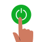
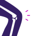
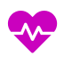
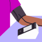
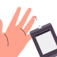
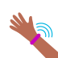
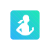
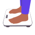
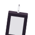
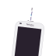
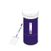
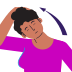
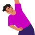
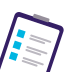
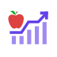
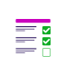
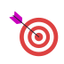
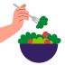
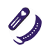
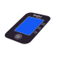
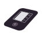
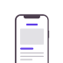
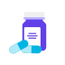
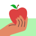
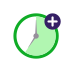
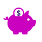
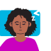
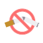
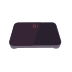
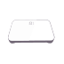
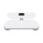
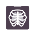
Hero illustrations
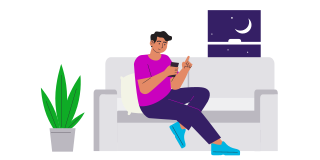
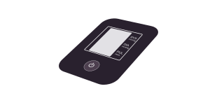
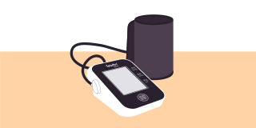
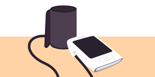
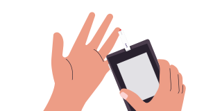
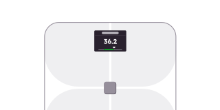
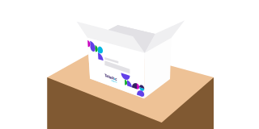
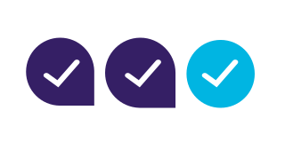
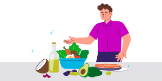
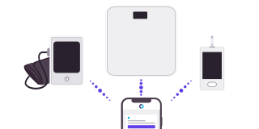
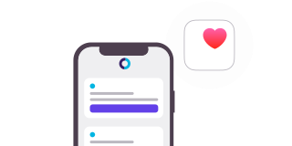
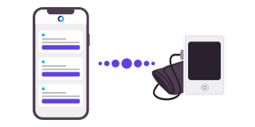
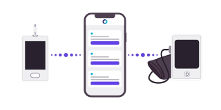
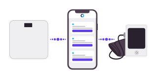
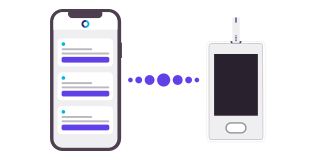
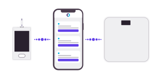
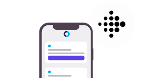
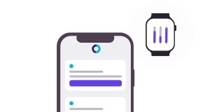